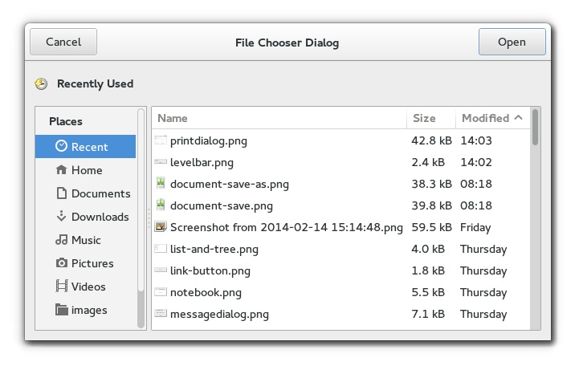

Gtk.FileChooser
Example
| Implementations: | |
|---|---|
| Gtk.FileChooserButton, Gtk.FileChooserDialog, Gtk.FileChooserWidget | |
Methods
Virtual Methods
None
Properties
| Name | Type | Flags | Short Description |
|---|---|---|---|
| action | Gtk.FileChooserAction | r/w | The type of operation that the file selector is performing |
| create-folders | bool | r/w | Whether a file chooser not in open mode will offer the user to create new folders. |
| do-overwrite-confirmation | bool | r/w | Whether a file chooser in save mode will present an overwrite confirmation dialog if necessary. |
| extra-widget | Gtk.Widget | r/w | Application supplied widget for extra options. |
| filter | Gtk.FileFilter | r/w | The current filter for selecting which files are displayed |
| local-only | bool | r/w | Whether the selected file(s) should be limited to local file: URLs |
| preview-widget | Gtk.Widget | r/w | Application supplied widget for custom previews. |
| preview-widget-active | bool | r/w | Whether the application supplied widget for custom previews should be shown. |
| select-multiple | bool | r/w | Whether to allow multiple files to be selected |
| show-hidden | bool | r/w | Whether the hidden files and folders should be displayed |
| use-preview-label | bool | r/w | Whether to display a stock label with the name of the previewed file. |
Signals
| Name | Short Description |
|---|---|
| confirm-overwrite | This signal gets emitted whenever it is appropriate to present a confirmation dialog when the user has selected a file name that already exists. |
| current-folder-changed | This signal is emitted when the current folder in a Gtk.FileChooser changes. |
| file-activated | This signal is emitted when the user “activates” a file in the file chooser. |
| selection-changed | This signal is emitted when there is a change in the set of selected files in a Gtk.FileChooser. |
| update-preview | This signal is emitted when the preview in a file chooser should be regenerated. |
Fields
None
Class Details
- class Gtk.FileChooser
Bases: GObject.GInterface
Gtk.FileChooser is an interface that can be implemented by file selection widgets. In GTK+, the main objects that implement this interface are Gtk.FileChooserWidget, Gtk.FileChooserDialog, and Gtk.FileChooserButton. You do not need to write an object that implements the Gtk.FileChooser interface unless you are trying to adapt an existing file selector to expose a standard programming interface.
Gtk.FileChooser allows for shortcuts to various places in the filesystem. In the default implementation these are displayed in the left pane. It may be a bit confusing at first that these shortcuts come from various sources and in various flavours, so lets explain the terminology here:
- Bookmarks: are created by the user, by dragging folders from the
right pane to the left pane, or by using the “Add”. Bookmarks can be renamed and deleted by the user.
- Shortcuts: can be provided by the application. For example, a Paint
program may want to add a shortcut for a Clipart folder. Shortcuts cannot be modified by the user.
- Volumes: are provided by the underlying filesystem abstraction. They are
the “roots” of the filesystem.
# File Names and Encodings
When the user is finished selecting files in a Gtk.FileChooser, your program can get the selected names either as filenames or as URIs. For URIs, the normal escaping rules are applied if the URI contains non-ASCII characters. However, filenames are always returned in the character set specified by the `G_FILENAME_ENCODING` environment variable. Please see the GLib documentation for more details about this variable.
This means that while you can pass the result of Gtk.FileChooser.get_filename () to open() or fopen(), you may not be able to directly set it as the text of a Gtk.Label widget unless you convert it first to UTF-8, which all GTK+ widgets expect. You should use GLib.filename_to_utf8 () to convert filenames into strings that can be passed to GTK+ widgets.
# Adding a Preview Widget
You can add a custom preview widget to a file chooser and then get notification about when the preview needs to be updated. To install a preview widget, use Gtk.FileChooser.set_preview_widget (). Then, connect to the Gtk.FileChooser ::update-preview signal to get notified when you need to update the contents of the preview.
Your callback should use Gtk.FileChooser.get_preview_filename () to see what needs previewing. Once you have generated the preview for the corresponding file, you must call Gtk.FileChooser.set_preview_widget_active () with a boolean flag that indicates whether your callback could successfully generate a preview.
## Example: Using a Preview Widget ## {#gtkfilechooser-preview}
<!-- language="C" --> { GtkImage *preview; ... preview = gtk_image_new (); gtk_file_chooser_set_preview_widget (my_file_chooser, preview); g_signal_connect (my_file_chooser, "update-preview", G_CALLBACK (update_preview_cb), preview); } static void update_preview_cb (GtkFileChooser *file_chooser, gpointer data) { GtkWidget *preview; char *filename; GdkPixbuf *pixbuf; gboolean have_preview; preview = GTK_WIDGET (data); filename = gtk_file_chooser_get_preview_filename (file_chooser); pixbuf = gdk_pixbuf_new_from_file_at_size (filename, 128, 128, NULL); have_preview = (pixbuf != NULL); g_free (filename); gtk_image_set_from_pixbuf (GTK_IMAGE (preview), pixbuf); if (pixbuf) g_object_unref (pixbuf); gtk_file_chooser_set_preview_widget_active (file_chooser, have_preview); }
# Adding Extra Widgets
You can add extra widgets to a file chooser to provide options that are not present in the default design. For example, you can add a toggle button to give the user the option to open a file in read-only mode. You can use Gtk.FileChooser.set_extra_widget () to insert additional widgets in a file chooser.
An example for adding extra widgets:
<!-- language="C" --> GtkWidget *toggle; ... toggle = gtk_check_button_new_with_label ("Open file read-only"); gtk_widget_show (toggle); gtk_file_chooser_set_extra_widget (my_file_chooser, toggle); }
If you want to set more than one extra widget in the file chooser, you can a container such as a Gtk.Box or a Gtk.Grid and include your widgets in it. Then, set the container as the whole extra widget.
- add_filter(filter)
Parameters: filter (Gtk.FileFilter) – a Gtk.FileFilter Adds filter to the list of filters that the user can select between. When a filter is selected, only files that are passed by that filter are displayed.
Note that the chooser takes ownership of the filter, so you have to ref and sink it if you want to keep a reference.
New in version 2.4.
- add_shortcut_folder(folder)
Parameters: folder (str) – filename of the folder to add Raises: GLib.GError Returns: True if the folder could be added successfully, False otherwise. In the latter case, the error will be set as appropriate. Return type: bool Adds a folder to be displayed with the shortcut folders in a file chooser. Note that shortcut folders do not get saved, as they are provided by the application. For example, you can use this to add a “/usr/share/mydrawprogram/Clipart” folder to the volume list.
New in version 2.4.
- add_shortcut_folder_uri(uri)
Parameters: uri (str) – URI of the folder to add Raises: GLib.GError Returns: True if the folder could be added successfully, False otherwise. In the latter case, the error will be set as appropriate. Return type: bool Adds a folder URI to be displayed with the shortcut folders in a file chooser. Note that shortcut folders do not get saved, as they are provided by the application. For example, you can use this to add a “file:///usr/share/mydrawprogram/Clipart” folder to the volume list.
New in version 2.4.
- get_action()
Returns: the action that the file selector is performing Return type: Gtk.FileChooserAction Gets the type of operation that the file chooser is performing; see Gtk.FileChooser.set_action ().
New in version 2.4.
- get_create_folders()
Returns: True if the Create Folder button should be displayed. Return type: bool Gets whether file choser will offer to create new folders. See Gtk.FileChooser.set_create_folders ().
New in version 2.18.
- get_current_folder()
Returns: the full path of the current folder, or None if the current path cannot be represented as a local filename. Free with GLib.free (). This function will also return None if the file chooser was unable to load the last folder that was requested from it; for example, as would be for calling Gtk.FileChooser.set_current_folder () on a nonexistent folder. Return type: str Gets the current folder of chooser as a local filename. See Gtk.FileChooser.set_current_folder ().
Note that this is the folder that the file chooser is currently displaying (e.g. “/home/username/Documents”), which is not the same as the currently-selected folder if the chooser is in Gtk.FileChooserAction.SELECT_FOLDER mode (e.g. “/home/username/Documents/selected-folder/”. To get the currently-selected folder in that mode, use Gtk.FileChooser.get_uri () as the usual way to get the selection.
New in version 2.4.
- get_current_folder_file()
Returns: the Gio.File for the current folder. Return type: Gio.File Gets the current folder of chooser as Gio.File. See Gtk.FileChooser.get_current_folder_uri ().
New in version 2.14.
- get_current_folder_uri()
Returns: the URI for the current folder. Free with GLib.free (). This function will also return None if the file chooser was unable to load the last folder that was requested from it; for example, as would be for calling Gtk.FileChooser.set_current_folder_uri () on a nonexistent folder. Return type: str Gets the current folder of chooser as an URI. See Gtk.FileChooser.set_current_folder_uri ().
Note that this is the folder that the file chooser is currently displaying (e.g. “file:///home/username/Documents”), which is not the same as the currently-selected folder if the chooser is in Gtk.FileChooserAction.SELECT_FOLDER mode (e.g. “file:///home/username/Documents/selected-folder/”. To get the currently-selected folder in that mode, use Gtk.FileChooser.get_uri () as the usual way to get the selection.
New in version 2.4.
- get_current_name()
Returns: The raw text from the file chooser’s “Name” entry. Free this with GLib.free (). Note that this string is not a full pathname or URI; it is whatever the contents of the entry are. Note also that this string is in UTF-8 encoding, which is not necessarily the system’s encoding for filenames. Return type: str Gets the current name in the file selector, as entered by the user in the text entry for “Name”.
This is meant to be used in save dialogs, to get the currently typed filename when the file itself does not exist yet. For example, an application that adds a custom extra widget to the file chooser for “file format” may want to change the extension of the typed filename based on the chosen format, say, from “.jpg” to “.png”.
New in version 3.10.
- get_do_overwrite_confirmation()
Returns: True if the file chooser will present a confirmation dialog; False otherwise. Return type: bool Queries whether a file chooser is set to confirm for overwriting when the user types a file name that already exists.
New in version 2.8.
- get_extra_widget()
Returns: the current extra widget, or None Return type: Gtk.Widget Gets the current preview widget; see Gtk.FileChooser.set_extra_widget ().
New in version 2.4.
- get_file()
Returns: a selected Gio.File. You own the returned file; use GObject.Object.unref () to release it. Return type: Gio.File Gets the Gio.File for the currently selected file in the file selector. If multiple files are selected, one of the files will be returned at random.
If the file chooser is in folder mode, this function returns the selected folder.
New in version 2.14.
- get_filename()
Returns: The currently selected filename, or None if no file is selected, or the selected file can’t be represented with a local filename. Free with GLib.free (). Return type: str Gets the filename for the currently selected file in the file selector. The filename is returned as an absolute path. If multiple files are selected, one of the filenames will be returned at random.
If the file chooser is in folder mode, this function returns the selected folder.
New in version 2.4.
- get_filenames()
Returns: a GLib.SList containing the filenames of all selected files and subfolders in the current folder. Free the returned list with GLib.SList.free (), and the filenames with GLib.free (). Return type: [str] Lists all the selected files and subfolders in the current folder of chooser. The returned names are full absolute paths. If files in the current folder cannot be represented as local filenames they will be ignored. (See Gtk.FileChooser.get_uris ())
New in version 2.4.
- get_files()
Returns: a GLib.SList containing a Gio.File for each selected file and subfolder in the current folder. Free the returned list with GLib.SList.free (), and the files with GObject.Object.unref (). Return type: [Gio.File] Lists all the selected files and subfolders in the current folder of chooser as Gio.File. An internal function, see Gtk.FileChooser.get_uris ().
New in version 2.14.
- get_filter()
Returns: the current filter, or None Return type: Gtk.FileFilter Gets the current filter; see Gtk.FileChooser.set_filter ().
New in version 2.4.
- get_local_only()
Returns: True if only local files can be selected. Return type: bool Gets whether only local files can be selected in the file selector. See Gtk.FileChooser.set_local_only ()
New in version 2.4.
- get_preview_file()
Returns: the Gio.File for the file to preview, or None if no file is selected. Free with GObject.Object.unref (). Return type: Gio.File Gets the Gio.File that should be previewed in a custom preview Internal function, see Gtk.FileChooser.get_preview_uri ().
New in version 2.14.
- get_preview_filename()
Returns: the filename to preview, or None if no file is selected, or if the selected file cannot be represented as a local filename. Free with GLib.free () Return type: str Gets the filename that should be previewed in a custom preview widget. See Gtk.FileChooser.set_preview_widget ().
New in version 2.4.
- get_preview_uri()
Returns: the URI for the file to preview, or None if no file is selected. Free with GLib.free (). Return type: str Gets the URI that should be previewed in a custom preview widget. See Gtk.FileChooser.set_preview_widget ().
New in version 2.4.
- get_preview_widget()
Returns: the current preview widget, or None Return type: Gtk.Widget Gets the current preview widget; see Gtk.FileChooser.set_preview_widget ().
New in version 2.4.
- get_preview_widget_active()
Returns: True if the preview widget is active for the current filename. Return type: bool Gets whether the preview widget set by Gtk.FileChooser.set_preview_widget () should be shown for the current filename. See Gtk.FileChooser.set_preview_widget_active ().
New in version 2.4.
- get_select_multiple()
Returns: True if multiple files can be selected. Return type: bool Gets whether multiple files can be selected in the file selector. See Gtk.FileChooser.set_select_multiple ().
New in version 2.4.
Returns: True if hidden files and folders are displayed. Return type: bool Gets whether hidden files and folders are displayed in the file selector. See Gtk.FileChooser.set_show_hidden ().
New in version 2.6.
- get_uri()
Returns: The currently selected URI, or None if no file is selected. If Gtk.FileChooser.set_local_only () is set to True (the default) a local URI will be returned for any FUSE locations. Free with GLib.free () Return type: str Gets the URI for the currently selected file in the file selector. If multiple files are selected, one of the filenames will be returned at random.
If the file chooser is in folder mode, this function returns the selected folder.
New in version 2.4.
- get_uris()
Returns: a GLib.SList containing the URIs of all selected files and subfolders in the current folder. Free the returned list with GLib.SList.free (), and the filenames with GLib.free (). Return type: [str] Lists all the selected files and subfolders in the current folder of chooser. The returned names are full absolute URIs.
New in version 2.4.
- get_use_preview_label()
Returns: True if the file chooser is set to display a label with the name of the previewed file, False otherwise. Return type: bool Gets whether a stock label should be drawn with the name of the previewed file. See Gtk.FileChooser.set_use_preview_label ().
- list_filters()
Returns: a GLib.SList containing the current set of user selectable filters. The contents of the list are owned by GTK+, but you must free the list itself with GLib.SList.free () when you are done with it. Return type: [Gtk.FileFilter] Lists the current set of user-selectable filters; see Gtk.FileChooser.add_filter (), Gtk.FileChooser.remove_filter ().
New in version 2.4.
- list_shortcut_folder_uris()
Returns: A list of folder URIs, or None if there are no shortcut folders. Free the returned list with GLib.SList.free (), and the URIs with GLib.free (). Return type: [str] or None Queries the list of shortcut folders in the file chooser, as set by Gtk.FileChooser.add_shortcut_folder_uri ().
New in version 2.4.
- list_shortcut_folders()
Returns: A list of folder filenames, or None if there are no shortcut folders. Free the returned list with GLib.SList.free (), and the filenames with GLib.free (). Return type: [str] or None Queries the list of shortcut folders in the file chooser, as set by Gtk.FileChooser.add_shortcut_folder ().
New in version 2.4.
- remove_filter(filter)
Parameters: filter (Gtk.FileFilter) – a Gtk.FileFilter Removes filter from the list of filters that the user can select between.
New in version 2.4.
- remove_shortcut_folder(folder)
Parameters: folder (str) – filename of the folder to remove Raises: GLib.GError Returns: True if the operation succeeds, False otherwise. In the latter case, the error will be set as appropriate. See also: Gtk.FileChooser.add_shortcut_folder ()
Return type: bool Removes a folder from a file chooser’s list of shortcut folders.
New in version 2.4.
- remove_shortcut_folder_uri(uri)
Parameters: uri (str) – URI of the folder to remove Raises: GLib.GError Returns: True if the operation succeeds, False otherwise. In the latter case, the error will be set as appropriate. See also: Gtk.FileChooser.add_shortcut_folder_uri ()
Return type: bool Removes a folder URI from a file chooser’s list of shortcut folders.
New in version 2.4.
- select_all()
Selects all the files in the current folder of a file chooser.
New in version 2.4.
- select_file(file)
Parameters: file (Gio.File) – the file to select Raises: GLib.GError Returns: Not useful. Return type: bool Selects the file referred to by file. An internal function. See _gtk_file_chooser_select_uri().
New in version 2.14.
- select_filename(filename)
Parameters: filename (str) – the filename to select Returns: Not useful. See also: Gtk.FileChooser.set_filename ()
Return type: bool Selects a filename. If the file name isn’t in the current folder of chooser, then the current folder of chooser will be changed to the folder containing filename.
New in version 2.4.
- select_uri(uri)
Parameters: uri (str) – the URI to select Returns: Not useful. Return type: bool Selects the file to by uri. If the URI doesn’t refer to a file in the current folder of chooser, then the current folder of chooser will be changed to the folder containing filename.
New in version 2.4.
- set_action(action)
Parameters: action (Gtk.FileChooserAction) – the action that the file selector is performing Sets the type of operation that the chooser is performing; the user interface is adapted to suit the selected action. For example, an option to create a new folder might be shown if the action is Gtk.FileChooserAction.SAVE but not if the action is Gtk.FileChooserAction.OPEN.
New in version 2.4.
- set_create_folders(create_folders)
Parameters: create_folders (bool) – True if the Create Folder button should be displayed Sets whether file choser will offer to create new folders. This is only relevant if the action is not set to be Gtk.FileChooserAction.OPEN.
New in version 2.18.
- set_current_folder(filename)
Parameters: filename (str) – the full path of the new current folder Returns: Not useful. Return type: bool Sets the current folder for chooser from a local filename. The user will be shown the full contents of the current folder, plus user interface elements for navigating to other folders.
In general, you should not use this function. See the [section on setting up a file chooser dialog][gtkfilechooserdialog-setting-up] for the rationale behind this.
New in version 2.4.
- set_current_folder_file(file)
Parameters: file (Gio.File) – the Gio.File for the new folder Raises: GLib.GError Returns: True if the folder could be changed successfully, False otherwise. Return type: bool Sets the current folder for chooser from a Gio.File. Internal function, see Gtk.FileChooser.set_current_folder_uri ().
New in version 2.14.
- set_current_folder_uri(uri)
Parameters: uri (str) – the URI for the new current folder Returns: True if the folder could be changed successfully, False otherwise. Return type: bool Sets the current folder for chooser from an URI. The user will be shown the full contents of the current folder, plus user interface elements for navigating to other folders.
In general, you should not use this function. See the [section on setting up a file chooser dialog][gtkfilechooserdialog-setting-up] for the rationale behind this.
New in version 2.4.
- set_current_name(name)
Parameters: name (str) – the filename to use, as a UTF-8 string Sets the current name in the file selector, as if entered by the user. Note that the name passed in here is a UTF-8 string rather than a filename. This function is meant for such uses as a suggested name in a “Save As...” dialog. You can pass “Untitled.doc” or a similarly suitable suggestion for the name.
If you want to preselect a particular existing file, you should use Gtk.FileChooser.set_filename () or Gtk.FileChooser.set_uri () instead. Please see the documentation for those functions for an example of using Gtk.FileChooser.set_current_name () as well.
New in version 2.4.
- set_do_overwrite_confirmation(do_overwrite_confirmation)
Parameters: do_overwrite_confirmation (bool) – whether to confirm overwriting in save mode Sets whether a file chooser in Gtk.FileChooserAction.SAVE mode will present a confirmation dialog if the user types a file name that already exists. This is False by default.
If set to True, the chooser will emit the Gtk.FileChooser ::confirm-overwrite signal when appropriate.
If all you need is the stock confirmation dialog, set this property to True. You can override the way confirmation is done by actually handling the Gtk.FileChooser ::confirm-overwrite signal; please refer to its documentation for the details.
New in version 2.8.
- set_extra_widget(extra_widget)
Parameters: extra_widget (Gtk.Widget) – widget for extra options Sets an application-supplied widget to provide extra options to the user.
New in version 2.4.
- set_file(file)
Parameters: file (Gio.File) – the Gio.File to set as current Raises: GLib.GError Returns: Not useful. Return type: bool Sets file as the current filename for the file chooser, by changing to the file’s parent folder and actually selecting the file in list. If the chooser is in Gtk.FileChooserAction.SAVE mode, the file’s base name will also appear in the dialog’s file name entry.
If the file name isn’t in the current folder of chooser, then the current folder of chooser will be changed to the folder containing filename. This is equivalent to a sequence of Gtk.FileChooser.unselect_all () followed by Gtk.FileChooser.select_filename ().
Note that the file must exist, or nothing will be done except for the directory change.
If you are implementing a save dialog, you should use this function if you already have a file name to which the user may save; for example, when the user opens an existing file and then does Save As... If you don’t have a file name already — for example, if the user just created a new file and is saving it for the first time, do not call this function. Instead, use something similar to this:
<!-- language="C" --> if (document_is_new) { // the user just created a new document gtk_file_chooser_set_current_folder_file (chooser, default_file_for_saving); gtk_file_chooser_set_current_name (chooser, "Untitled document"); } else { // the user edited an existing document gtk_file_chooser_set_file (chooser, existing_file); }
New in version 2.14.
- set_filename(filename)
Parameters: filename (str) – the filename to set as current Returns: Not useful. Return type: bool Sets filename as the current filename for the file chooser, by changing to the file’s parent folder and actually selecting the file in list; all other files will be unselected. If the chooser is in Gtk.FileChooserAction.SAVE mode, the file’s base name will also appear in the dialog’s file name entry.
Note that the file must exist, or nothing will be done except for the directory change.
You should use this function only when implementing a save dialog for which you already have a file name to which the user may save. For example, when the user opens an existing file and then does Save As... to save a copy or a modified version. If you don’t have a file name already — for example, if the user just created a new file and is saving it for the first time, do not call this function. Instead, use something similar to this:
<!-- language="C" --> if (document_is_new) { // the user just created a new document gtk_file_chooser_set_current_name (chooser, "Untitled document"); } else { // the user edited an existing document gtk_file_chooser_set_filename (chooser, existing_filename); }
In the first case, the file chooser will present the user with useful suggestions as to where to save his new file. In the second case, the file’s existing location is already known, so the file chooser will use it.
New in version 2.4.
- set_filter(filter)
Parameters: filter (Gtk.FileFilter) – a Gtk.FileFilter Sets the current filter; only the files that pass the filter will be displayed. If the user-selectable list of filters is non-empty, then the filter should be one of the filters in that list. Setting the current filter when the list of filters is empty is useful if you want to restrict the displayed set of files without letting the user change it.
New in version 2.4.
- set_local_only(local_only)
Parameters: local_only (bool) – True if only local files can be selected Sets whether only local files can be selected in the file selector. If local_only is True (the default), then the selected file or files are guaranteed to be accessible through the operating systems native file system and therefore the application only needs to worry about the filename functions in Gtk.FileChooser, like Gtk.FileChooser.get_filename (), rather than the URI functions like Gtk.FileChooser.get_uri (),
On some systems non-native files may still be available using the native filesystem via a userspace filesystem (FUSE).
New in version 2.4.
- set_preview_widget(preview_widget)
Parameters: preview_widget (Gtk.Widget) – widget for displaying preview. Sets an application-supplied widget to use to display a custom preview of the currently selected file. To implement a preview, after setting the preview widget, you connect to the Gtk.FileChooser ::update-preview signal, and call Gtk.FileChooser.get_preview_filename () or Gtk.FileChooser.get_preview_uri () on each change. If you can display a preview of the new file, update your widget and set the preview active using Gtk.FileChooser.set_preview_widget_active (). Otherwise, set the preview inactive.
When there is no application-supplied preview widget, or the application-supplied preview widget is not active, the file chooser will display no preview at all.
New in version 2.4.
- set_preview_widget_active(active)
Parameters: active (bool) – whether to display the user-specified preview widget Sets whether the preview widget set by Gtk.FileChooser.set_preview_widget () should be shown for the current filename. When active is set to false, the file chooser may display an internally generated preview of the current file or it may display no preview at all. See Gtk.FileChooser.set_preview_widget () for more details.
New in version 2.4.
- set_select_multiple(select_multiple)
Parameters: select_multiple (bool) – True if multiple files can be selected. Sets whether multiple files can be selected in the file selector. This is only relevant if the action is set to be Gtk.FileChooserAction.OPEN or Gtk.FileChooserAction.SELECT_FOLDER.
New in version 2.4.
Parameters: show_hidden (bool) – True if hidden files and folders should be displayed. Sets whether hidden files and folders are displayed in the file selector.
New in version 2.6.
- set_uri(uri)
Parameters: uri (str) – the URI to set as current Returns: Not useful. Return type: bool Sets the file referred to by uri as the current file for the file chooser, by changing to the URI’s parent folder and actually selecting the URI in the list. If the chooser is Gtk.FileChooserAction.SAVE mode, the URI’s base name will also appear in the dialog’s file name entry.
Note that the URI must exist, or nothing will be done except for the directory change.
You should use this function only when implementing a save dialog for which you already have a file name to which the user may save. For example, when the user opens an existing file and then does Save As... to save a copy or a modified version. If you don’t have a file name already — for example, if the user just created a new file and is saving it for the first time, do not call this function. Instead, use something similar to this:
<!-- language="C" --> if (document_is_new) { // the user just created a new document gtk_file_chooser_set_current_name (chooser, "Untitled document"); } else { // the user edited an existing document gtk_file_chooser_set_uri (chooser, existing_uri); }
In the first case, the file chooser will present the user with useful suggestions as to where to save his new file. In the second case, the file’s existing location is already known, so the file chooser will use it.
New in version 2.4.
- set_use_preview_label(use_label)
Parameters: use_label (bool) – whether to display a stock label with the name of the previewed file Sets whether the file chooser should display a stock label with the name of the file that is being previewed; the default is True. Applications that want to draw the whole preview area themselves should set this to False and display the name themselves in their preview widget.
See also: Gtk.FileChooser.set_preview_widget ()
New in version 2.4.
- unselect_all()
Unselects all the files in the current folder of a file chooser.
New in version 2.4.
- unselect_file(file)
Parameters: file (Gio.File) – a Gio.File Unselects the file referred to by file. If the file is not in the current directory, does not exist, or is otherwise not currently selected, does nothing.
New in version 2.14.
- unselect_filename(filename)
Parameters: filename (str) – the filename to unselect Unselects a currently selected filename. If the filename is not in the current directory, does not exist, or is otherwise not currently selected, does nothing.
New in version 2.4.
- unselect_uri(uri)
Parameters: uri (str) – the URI to unselect Unselects the file referred to by uri. If the file is not in the current directory, does not exist, or is otherwise not currently selected, does nothing.
New in version 2.4.
Signal Details
- Gtk.FileChooser.signals.confirm_overwrite(file_chooser)
Signal Name: confirm-overwrite Flags: RUN_LAST Parameters: file_chooser (Gtk.FileChooser) – The object which received the signal Returns: a Gtk.FileChooserConfirmation value that indicates which action to take after emitting the signal. Return type: Gtk.FileChooserConfirmation This signal gets emitted whenever it is appropriate to present a confirmation dialog when the user has selected a file name that already exists. The signal only gets emitted when the file chooser is in Gtk.FileChooserAction.SAVE mode.
Most applications just need to turn on the Gtk.FileChooser :do-overwrite-confirmation property (or call the Gtk.FileChooser.set_do_overwrite_confirmation () function), and they will automatically get a stock confirmation dialog. Applications which need to customize this behavior should do that, and also connect to the Gtk.FileChooser ::confirm-overwrite signal.
A signal handler for this signal must return a Gtk.FileChooserConfirmation value, which indicates the action to take. If the handler determines that the user wants to select a different filename, it should return Gtk.FileChooserConfirmation.SELECT_AGAIN. If it determines that the user is satisfied with his choice of file name, it should return Gtk.FileChooserConfirmation.ACCEPT_FILENAME. On the other hand, if it determines that the stock confirmation dialog should be used, it should return Gtk.FileChooserConfirmation.CONFIRM. The following example illustrates this.
## Custom confirmation ## {#gtkfilechooser-confirmation}
<!-- language="C" --> static GtkFileChooserConfirmation confirm_overwrite_callback (GtkFileChooser *chooser, gpointer data) { char *uri; uri = gtk_file_chooser_get_uri (chooser); if (is_uri_read_only (uri)) { if (user_wants_to_replace_read_only_file (uri)) return GTK_FILE_CHOOSER_CONFIRMATION_ACCEPT_FILENAME; else return GTK_FILE_CHOOSER_CONFIRMATION_SELECT_AGAIN; } else return GTK_FILE_CHOOSER_CONFIRMATION_CONFIRM; // fall back to the default dialog } ... chooser = gtk_file_chooser_dialog_new (...); gtk_file_chooser_set_do_overwrite_confirmation (GTK_FILE_CHOOSER (dialog), TRUE); g_signal_connect (chooser, "confirm-overwrite", G_CALLBACK (confirm_overwrite_callback), NULL); if (gtk_dialog_run (chooser) == GTK_RESPONSE_ACCEPT) save_to_file (gtk_file_chooser_get_filename (GTK_FILE_CHOOSER (chooser)); gtk_widget_destroy (chooser);
New in version 2.8.
- Gtk.FileChooser.signals.current_folder_changed(file_chooser)
Signal Name: current-folder-changed Flags: RUN_LAST Parameters: file_chooser (Gtk.FileChooser) – The object which received the signal This signal is emitted when the current folder in a Gtk.FileChooser changes. This can happen due to the user performing some action that changes folders, such as selecting a bookmark or visiting a folder on the file list. It can also happen as a result of calling a function to explicitly change the current folder in a file chooser.
Normally you do not need to connect to this signal, unless you need to keep track of which folder a file chooser is showing.
See also: Gtk.FileChooser.set_current_folder (), Gtk.FileChooser.get_current_folder (), Gtk.FileChooser.set_current_folder_uri (), Gtk.FileChooser.get_current_folder_uri ().
- Gtk.FileChooser.signals.file_activated(file_chooser)
Signal Name: file-activated Flags: RUN_LAST Parameters: file_chooser (Gtk.FileChooser) – The object which received the signal This signal is emitted when the user “activates” a file in the file chooser. This can happen by double-clicking on a file in the file list, or by pressing `Enter`.
Normally you do not need to connect to this signal. It is used internally by Gtk.FileChooserDialog to know when to activate the default button in the dialog.
See also: Gtk.FileChooser.get_filename (), Gtk.FileChooser.get_filenames (), Gtk.FileChooser.get_uri (), Gtk.FileChooser.get_uris ().
- Gtk.FileChooser.signals.selection_changed(file_chooser)
Signal Name: selection-changed Flags: RUN_LAST Parameters: file_chooser (Gtk.FileChooser) – The object which received the signal This signal is emitted when there is a change in the set of selected files in a Gtk.FileChooser. This can happen when the user modifies the selection with the mouse or the keyboard, or when explicitly calling functions to change the selection.
Normally you do not need to connect to this signal, as it is easier to wait for the file chooser to finish running, and then to get the list of selected files using the functions mentioned below.
See also: Gtk.FileChooser.select_filename (), Gtk.FileChooser.unselect_filename (), Gtk.FileChooser.get_filename (), Gtk.FileChooser.get_filenames (), Gtk.FileChooser.select_uri (), Gtk.FileChooser.unselect_uri (), Gtk.FileChooser.get_uri (), Gtk.FileChooser.get_uris ().
- Gtk.FileChooser.signals.update_preview(file_chooser)
Signal Name: update-preview Flags: RUN_LAST Parameters: file_chooser (Gtk.FileChooser) – The object which received the signal This signal is emitted when the preview in a file chooser should be regenerated. For example, this can happen when the currently selected file changes. You should use this signal if you want your file chooser to have a preview widget.
Once you have installed a preview widget with Gtk.FileChooser.set_preview_widget (), you should update it when this signal is emitted. You can use the functions Gtk.FileChooser.get_preview_filename () or Gtk.FileChooser.get_preview_uri () to get the name of the file to preview. Your widget may not be able to preview all kinds of files; your callback must call Gtk.FileChooser.set_preview_widget_active () to inform the file chooser about whether the preview was generated successfully or not.
Please see the example code in [Using a Preview Widget][gtkfilechooser-preview].
See also: Gtk.FileChooser.set_preview_widget (), Gtk.FileChooser.set_preview_widget_active (), Gtk.FileChooser.set_use_preview_label (), Gtk.FileChooser.get_preview_filename (), Gtk.FileChooser.get_preview_uri ().
Property Details
- Gtk.FileChooser.props.action
Name: action Type: Gtk.FileChooserAction Default Value: Gtk.FileChooserAction.OPEN Flags: r/w The type of operation that the file selector is performing
- Gtk.FileChooser.props.create_folders
Name: create-folders Type: bool Default Value: True Flags: r/w Whether a file chooser not in Gtk.FileChooserAction.OPEN mode will offer the user to create new folders.
New in version 2.18.
- Gtk.FileChooser.props.do_overwrite_confirmation
Name: do-overwrite-confirmation Type: bool Default Value: False Flags: r/w Whether a file chooser in Gtk.FileChooserAction.SAVE mode will present an overwrite confirmation dialog if the user selects a file name that already exists.
New in version 2.8.
- Gtk.FileChooser.props.extra_widget
Name: extra-widget Type: Gtk.Widget Default Value: None Flags: r/w Application supplied widget for extra options.
- Gtk.FileChooser.props.filter
Name: filter Type: Gtk.FileFilter Default Value: None Flags: r/w The current filter for selecting which files are displayed
- Gtk.FileChooser.props.local_only
Name: local-only Type: bool Default Value: True Flags: r/w Whether the selected file(s) should be limited to local file: URLs
- Gtk.FileChooser.props.preview_widget
Name: preview-widget Type: Gtk.Widget Default Value: None Flags: r/w Application supplied widget for custom previews.
- Gtk.FileChooser.props.preview_widget_active
Name: preview-widget-active Type: bool Default Value: True Flags: r/w Whether the application supplied widget for custom previews should be shown.
- Gtk.FileChooser.props.select_multiple
Name: select-multiple Type: bool Default Value: False Flags: r/w Whether to allow multiple files to be selected